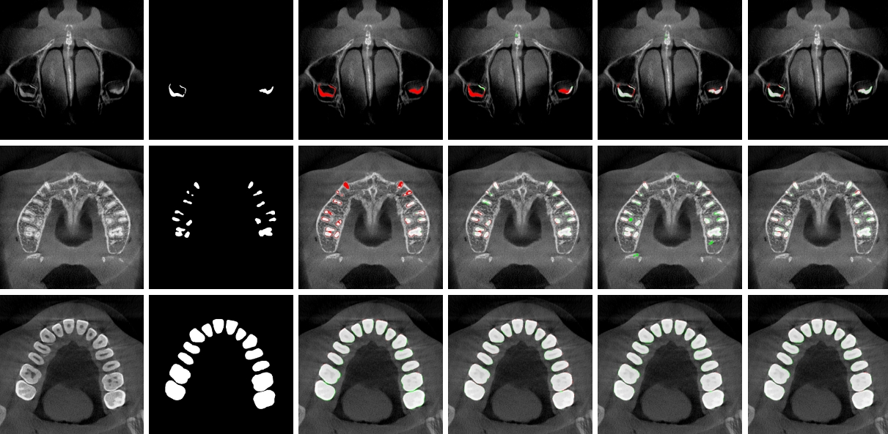

|
Jianhan (Jaime) Ma I am currently a research assistant at Shanghai Qi zhi Institute, under the mentorship of Prof. Huazhe Xu at Tsinghua University. I obtained my Master of Science degree at the Electrical & Computer Engineering department of UC San Diego, where I was fortunated to be advised by Prof. Xiaolong Wang.
My research is focused on advanced robot learning techniques to acquire generalized skills for locomotion & manipulation. My passion lies in exploring how distinct yet interconnected modalities, including visual and language inputs, can synergistically enhance the capabilities of intelligent systems. Before joining UCSD, I obtained my Bachelor of Engineering(B.E) dgree in Electrical Engineering and its Automation at Zhejiang University, and had close collabration with Prof. Liangjing Yang and Prof. Zuozhu Liu. Email / CV / Google Scholar / Twitter / Github / |

|
Publications & Preprints* Denotes Equal Contribution |

|
Generalized Animal Imitator: Agile Locomotion with Versatile Motion Prior
Ruihan Yang*, Zhuoqun Chen*, Jianhan Ma*, Chongyi Zheng*, Yiyu Chen, Quan Nguyen, Xiaolong Wang Conference on Robot Learning (CoRL), 2024 Project Page / arXiv / Video Our system learns a Single Instructable Motion Prior from a diverse reference motion dataset. |
Selected Projects |

|
Camera-based Augmented Reality Endoscope Auxiliary System
Advisor: Prof. Liangjing Yang Project Report We engineered a sophisticated Augmented Reality (AR) auxiliary system designed to accurately track and tag tumor locations in real-time. This system was adeptly integrated with the vision system of an endoscope mounted on an OpenManipulator-X robot arm. It effectively displayed the pinpointed tumor locations directly onto the endoscope’s visual feed, enhancing precision and guidance during medical procedures |
|  |
Self-supervised Learning for Semantic Tooth Segmentation on Cone-Beam CT Image
Advisor: Prof. Zuozhu Liu Project Report We proposed an innovative self-supervised representation learning strategy to enhance the accuracy of semantic segmentation in Cone-Beam Computed Tomography (CBCT) datasets. |
Education |

|
UC San Diego, San Diego, CA 2022.9 - Present M.S in Electrical & Computer Engineering |

|
Zhejiang University, Hangzhou, China 2017.8 - 2021.6 B.E in Electrical Engineering and its Automation |
Teaching |
|
Spring 2021
Teaching Assistant, ECE 342 & 343 - Electronic Circuits Instructor: Prof. Aili Wang Fall 2020 Teaching Assistant, ECE 313 - Probability with Engineering Application Instructor: Prof. Mark Butala |
|
Borrowed from John Barron. |